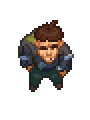

Koukol
| This article is a stub. You can help Graveyard Keeper Wiki by expanding it. |
| Koukol | |
|---|---|
 | |
Basic Information
| |
Location :
|
Left of Mountain fort |
Role :
|
Servant |
Trade Information
| |
Type of Goods :
|
Weapons & Armor |

Koukol is a servant to Lord Commander of the Mountain Fort. Koukol is only visible at night time to the left of the Mountain fort, above and to the right of Woodcutter. He will not appear until you have sufficiently progressed Ms. Charm's necklace quest by talking to Snake, then asked the guard at the fort gate about him.
Quests
Continuing Ms. Charm's lost Necklace
After you have a sufficiently high enough relationship with Snake, he informs you that he ran into problems acquiring the
Necklace for Ms. Charm and that his reputation is on the line over it. The
Necklace apparently is of significant sentimental value to the current owner, Captain of the Mountain Fort and uncle to the King. Snake had a misunderstanding with his contact for the Lord Commander in the past selling a salve to cure his hump that failed, and suggests you could maybe have better luck with pursuing conversation with him.
After asking the guard gate leading to the Mountain Fort about Koukol, the player can then find him at night in the dusk, West of the entrance to the Fort, roughly 1 screen away. He will remain there until dawn of the next day (all night) and retreat to the tower to the north.
After you discuss the
Necklace with him, the player considers that the Necklace may never be found. Talk to Ms. Charm to continue the quest line.
Trading
Selling
|
|
|
Purchasing
- With Stranger Sins DLC install, you can sell him the Rare Dagger for
 37
37  50.
50.
| |||||||||||||||||||||||||||||